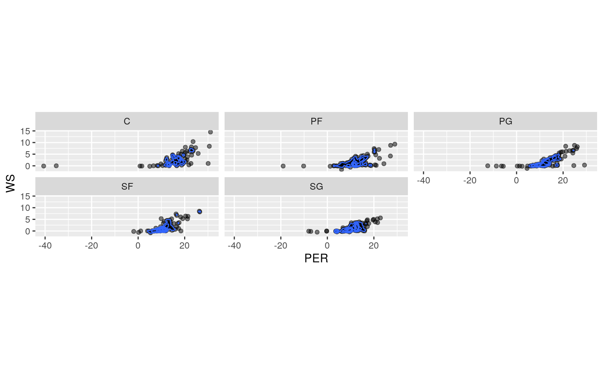
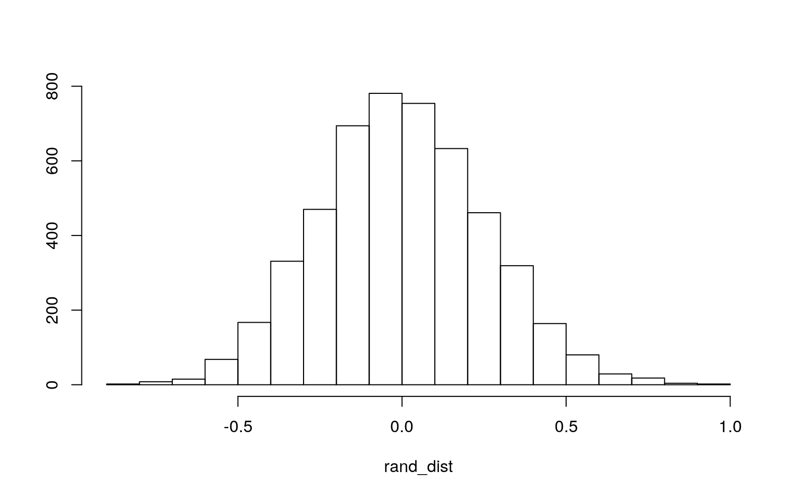
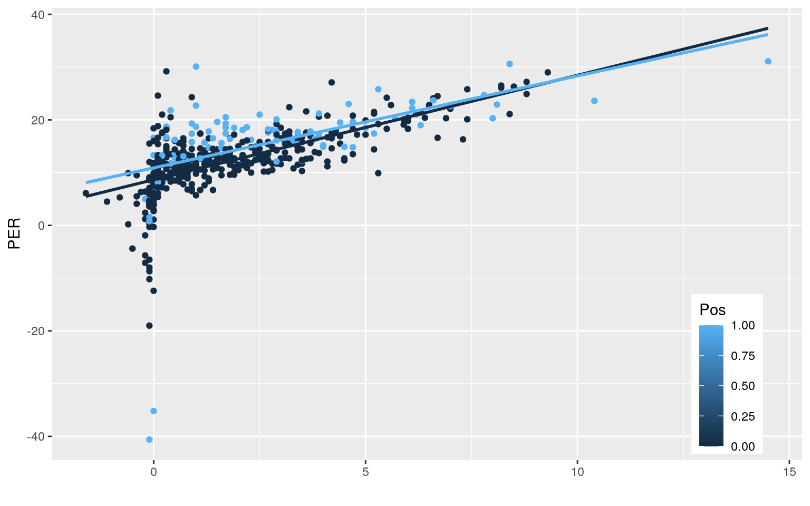
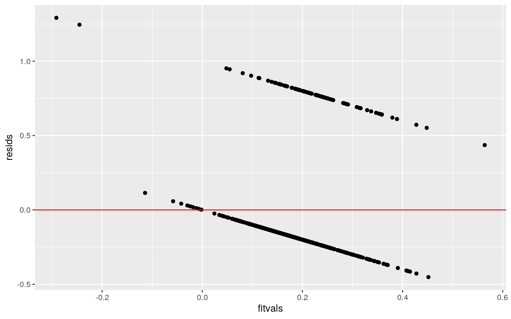
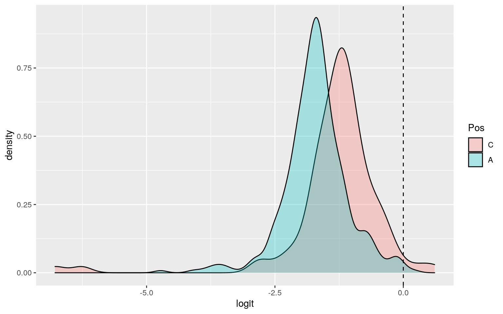
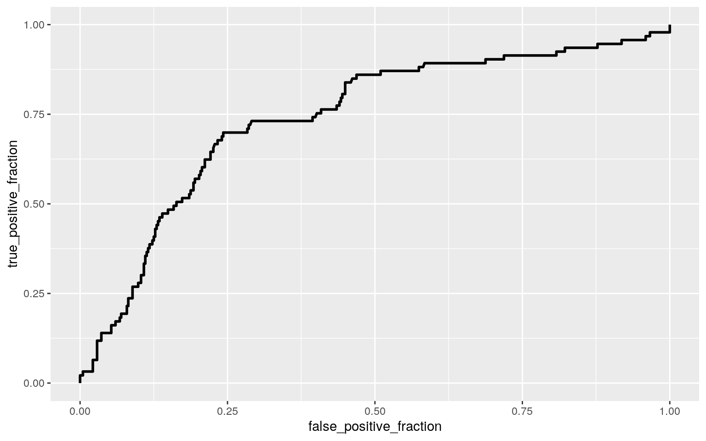
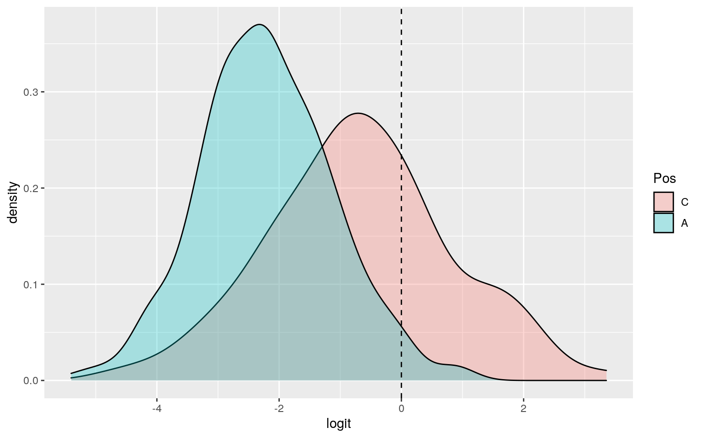
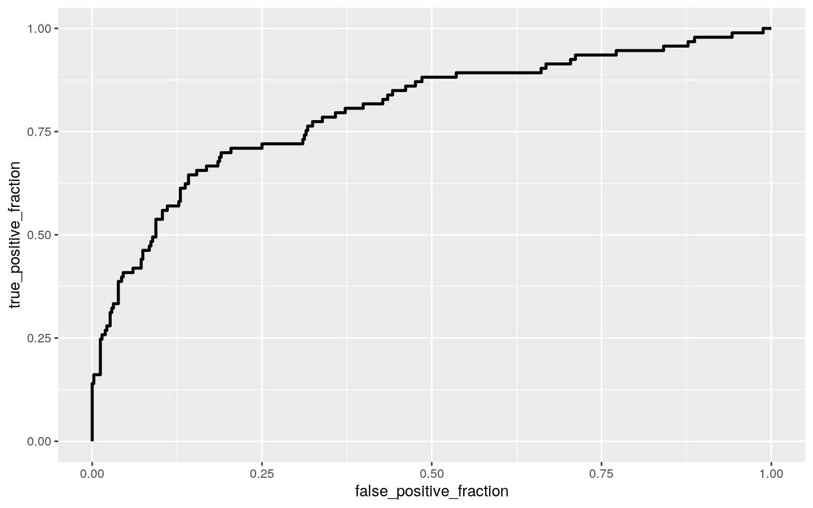

class_diag <- function(probs,truth){
#CONFUSION MATRIX: CALCULATE ACCURACY, TPR, TNR, PPV
if(is.character(truth)==TRUE) truth<-as.factor(truth)
if(is.numeric(truth)==FALSE & is.logical(truth)==FALSE) truth<-as.numeric(truth)-1
tab<-table(factor(probs>.5,levels=c("FALSE","TRUE")),factor(truth, levels=c(0,1)))
acc=sum(diag(tab))/sum(tab)
sens=tab[2,2]/colSums(tab)[2]
spec=tab[1,1]/colSums(tab)[1]
ppv=tab[2,2]/rowSums(tab)[2]
#CALCULATE EXACT AUC
ord<-order(probs, decreasing=TRUE)
probs <- probs[ord]; truth <- truth[ord]
TPR=cumsum(truth)/max(1,sum(truth))
FPR=cumsum(!truth)/max(1,sum(!truth))
dup <-c(probs[-1]>=probs[-length(probs)], FALSE)
TPR <-c(0,TPR[!dup],1); FPR<-c(0,FPR[!dup],1)
n <- length(TPR)
auc <- sum( ((TPR[-1]+TPR[-n])/2) * (FPR[-1]-FPR[-n]))
data.frame(acc,sens,spec,ppv,auc)
}library(tidyverse)
library(cluster)
NBA <- read_csv("NBA Advanced.csv")
NBA <- NBA %>% pivot_wider(1, names_from=`Player,Pos,PER,WS,BPM,VORP` , values_from = `Player,Pos,PER,WS,BPM,VORP`) %>% pivot_longer(contains(",")) %>% separate(name, into = c("Player", "Pos" , "PER" , "WS", "BPM" , "VORP"), sep = ",", convert = T) %>% separate("Player" , into = c("Player" , "ID"), sep = "\\\\") %>% na.omit() %>% select(c("Player", "Pos" , "PER" , "WS", "BPM" , "VORP")) In this Dataset I am calling it NBA theree are 6 total variables. The dataset is the advanced statistics of all the NBA players that have played in the 2020-2021 regular season. The variables in the set are the Player name, the Position the player plays (C, PF, SF, SG, or PG), the PER which is the players efficiency rating on offense, the WS which is the win shares that are attributed to a player based on their pereformance, the BPM which is the players Box-Plus-Minus or a stat that tracks how many points a player has added throughout the season, and the VORP which is the value over replacement for each player. I tidy’d up the data. There are a total of 509 players in the set.
library(dplyr)
library(rstatix)
library(mvtnorm)
library(ggExtra)
ggplot(NBA, aes(x = PER, y = WS)) +
geom_point(alpha = .5) + geom_density_2d(h=2) + coord_fixed() + facet_wrap(~Pos)
group <- NBA$Pos
DVs <- NBA %>% select(PER, WS)
sapply(split(DVs,group), mshapiro_test)## C PF PG SF SG
## statistic 0.547146 0.8451763 0.8201294 0.9727513
0.9050628
## p.value 1.80004e-15 2.313532e-09 9.449686e-10 0.06296138
4.328859e-07man1<-manova(cbind(PER,WS)~Pos, data=NBA)
summary(man1)## Df Pillai approx F num Df den Df Pr(>F)
## Pos 4 0.064731 4.2145 8 1008 5.523e-05 ***
## Residuals 504
## ---
## Signif. codes: 0 '***' 0.001 '**' 0.01 '*' 0.05 '.' 0.1
' ' 1summary.aov(man1)## Response PER :
## Df Sum Sq Mean Sq F value Pr(>F)
## Pos 4 1327.7 331.92 7.3595 9.136e-06 ***
## Residuals 504 22731.1 45.10
## ---
## Signif. codes: 0 '***' 0.001 '**' 0.01 '*' 0.05 '.' 0.1
' ' 1
##
## Response WS :
## Df Sum Sq Mean Sq F value Pr(>F)
## Pos 4 109.43 27.3587 6.0324 9.533e-05 ***
## Residuals 504 2285.77 4.5353
## ---
## Signif. codes: 0 '***' 0.001 '**' 0.01 '*' 0.05 '.' 0.1
' ' 1NBA%>%group_by(Pos)%>%summarize(mean(PER),mean(WS))## # A tibble: 5 x 3
## Pos `mean(PER)` `mean(WS)`
## <chr> <dbl> <dbl>
## 1 C 15.8 2.80
## 2 PF 12.5 1.72
## 3 PG 13.1 1.98
## 4 SF 11.7 1.80
## 5 SG 11.0 1.40pairwise.t.test(NBA$PER, NBA$Pos, p.adj = "none")##
## Pairwise comparisons using t tests with pooled SD
##
## data: NBA$PER and NBA$Pos
##
## C PF PG SF
## PF 0.00055 - - -
## PG 0.00518 0.53070 - -
## SF 6.3e-05 0.43498 0.17524 -
## SG 3.8e-07 0.09189 0.02250 0.42959
##
## P value adjustment method: nonepairwise.t.test(NBA$WS, NBA$Pos, p.adj = "none")##
## Pairwise comparisons using t tests with pooled SD
##
## data: NBA$WS and NBA$Pos
##
## C PF PG SF
## PF 0.00038 - - -
## PG 0.00796 0.37907 - -
## SF 0.00189 0.78946 0.57069 -
## SG 2.8e-06 0.24978 0.04375 0.17701
##
## P value adjustment method: none0.05/23## [1] 0.002173913Pos is the independent variable and PER and WS are the dependent variables. I performed 1 MANOVA, 2 ANOVA, and 20 t-tests. The probability of at least one type1 error is 0.00217. I did post-hoc ANOVA and pair-wise t-tests. The overall MANOVA is significant. The assumptions for a MANOVA are random and independent observations, multivariate dependent varibales, homogeneity, a linear relatioship between DVs, no extreme ouliers, and no multicollinearity. By using the Shapiro-wilkes test normality was not met for all of the Pos as SF was the only non-significant value. I do not belive that my data met all of the assumptions
NBA1 <- NBA %>% mutate(Pos=ifelse(Pos=="C",1,0))
NBA1%>%group_by(Pos)%>%
summarize(means=mean(WS))%>%summarize(`mean_diff`=diff(means))## # A tibble: 1 x 1
## mean_diff
## <dbl>
## 1 1.09rand_dist<-vector()
for(i in 1:5000){
new<-data.frame(WS=sample(NBA1$WS),condition=NBA1$Pos)
rand_dist[i]<-mean(new[new$condition==1,]$WS)-
mean(new[new$condition==0,]$WS)}
{hist(rand_dist,main="",ylab=""); abline(v = c(-1.086, 1.086),col="red")}
mean(rand_dist)## [1] 0.001372163mean(rand_dist>1.086 | rand_dist< -1.086)## [1] 0t.test(data=NBA1,WS~Pos,)##
## Welch Two Sample t-test
##
## data: WS by Pos
## t = -3.6875, df = 115.69, p-value = 0.0003464
## alternative hypothesis: true difference in means is not
equal to 0
## 95 percent confidence interval:
## -1.6698283 -0.5028195
## sample estimates:
## mean in group 0 mean in group 1
## 1.709375 2.795699I performed a randomization test for the mean difference for my data. I used the WS as my dependent variable and Pos as the independent variable. I first made the Pos data easier to understand by making all players that are Centers a 1 and all others a 0. The null hypothesis is that the mean WS is the same for Centers and all other positions. The alternate hypothesis is that mean WS is different for Centers and all other positions. The mean difference for the unscrambled data I got is 1.086. I then ran 5000 times and got a mean difference of 0 which is way lower. The p-value for the permutation test I got was 0 which is less than 0.05 so the null hypothesis is rejected. When running a t-test, the same conclusion is seen as the p-value of 0 is less than 0.05 so the null is rejected. So, there is a difference in the mean WS for centers and all other positions.
library(sandwich)
library(lmtest)
x<- scale(NBA1$PER)
y <- scale(NBA1$WS)
fit<-lm(Pos~x, data= NBA1)
summary(fit)##
## Call:
## lm(formula = Pos ~ x, data = NBA1)
##
## Residuals:
## Min 1Q Median 3Q Max
## -0.37706 -0.20014 -0.16476 -0.09282 1.44618
##
## Coefficients:
## Estimate Std. Error t value Pr(>|t|)
## (Intercept) 0.18271 0.01678 10.889 < 2e-16 ***
## x 0.08117 0.01680 4.832 1.79e-06 ***
## ---
## Signif. codes: 0 '***' 0.001 '**' 0.01 '*' 0.05 '.' 0.1
' ' 1
##
## Residual standard error: 0.3786 on 507 degrees of
freedom
## Multiple R-squared: 0.04403, Adjusted R-squared: 0.04214
## F-statistic: 23.35 on 1 and 507 DF, p-value: 1.791e-06fit1<-lm(Pos~y, data=NBA1)
summary(fit1)##
## Call:
## lm(formula = Pos ~ y, data = NBA1)
##
## Residuals:
## Min 1Q Median 3Q Max
## -0.4375 -0.1962 -0.1376 -0.1135 0.8900
##
## Coefficients:
## Estimate Std. Error t value Pr(>|t|)
## (Intercept) 0.18271 0.01684 10.851 < 2e-16 ***
## y 0.07485 0.01685 4.441 1.1e-05 ***
## ---
## Signif. codes: 0 '***' 0.001 '**' 0.01 '*' 0.05 '.' 0.1
' ' 1
##
## Residual standard error: 0.3799 on 507 degrees of
freedom
## Multiple R-squared: 0.03745, Adjusted R-squared: 0.03555
## F-statistic: 19.73 on 1 and 507 DF, p-value: 1.099e-05fit2<-lm(Pos~y + x, data=NBA1)
summary(fit2)##
## Call:
## lm(formula = Pos ~ y + x, data = NBA1)
##
## Residuals:
## Min 1Q Median 3Q Max
## -0.45165 -0.19584 -0.14949 -0.08013 1.29145
##
## Coefficients:
## Estimate Std. Error t value Pr(>|t|)
## (Intercept) 0.18271 0.01674 10.91 < 2e-16 ***
## y 0.03978 0.02139 1.86 0.06346 .
## x 0.05645 0.02139 2.64 0.00856 **
## ---
## Signif. codes: 0 '***' 0.001 '**' 0.01 '*' 0.05 '.' 0.1
' ' 1
##
## Residual standard error: 0.3777 on 506 degrees of
freedom
## Multiple R-squared: 0.05052, Adjusted R-squared: 0.04677
## F-statistic: 13.46 on 2 and 506 DF, p-value: 2.012e-06ggplot(NBA1, aes(x=WS, y=PER,group=Pos))+geom_point(aes(color=Pos))+
geom_smooth(method="lm",se=F,fullrange=T,aes(color=Pos))+
theme(legend.position=c(.9,.19))+xlab("")
resids<-fit2$residuals
fitvals<-fit2$fitted.values
ggplot()+geom_point(aes(fitvals,resids))+geom_hline(yintercept=0, color='red')
resids<- lm(y~x, data=NBA1)$residuals
resids <-fit2$residuals
ks.test(resids, "pnorm", mean=0, sd(resids)) ##
## One-sample Kolmogorov-Smirnov test
##
## data: resids
## D = 0.34752, p-value < 2.2e-16
## alternative hypothesis: two-sidedfit3<-lm(Pos~WS+PER,data=NBA1)
bptest(fit2)##
## studentized Breusch-Pagan test
##
## data: fit2
## BP = 11.416, df = 2, p-value = 0.003319summary(fit3)$coef## Estimate Std. Error t value Pr(>|t|)
## (Intercept) 0.043407823 0.035679496 1.216604 0.224322038
## WS 0.018319175 0.009848652 1.860069 0.063455737
## PER 0.008202558 0.003107505 2.639596 0.008556624coeftest(fit2, vcov = vcovHC(fit3))##
## t test of coefficients:
##
## Estimate Std. Error t value Pr(>|t|)
## (Intercept) 0.182711 0.071648 2.5501 0.01106 *
## ---
## Signif. codes: 0 '***' 0.001 '**' 0.01 '*' 0.05 '.' 0.1
' ' 1I first ran a linear regression for Pos and PER. I scaled the PER data first. For the estimate I got a value of 0.081 which means that 0.081 is the average increase in Pos for every 1 increase in PER and I got a value of 0.18 for the intercept which means at 0 PER the Pos is 0.18. I then did a linear regression for WS and Pos and scaled WS first. I got an estimate value of 0.075 which means that the 0.075 is the average increase in Pos for every 1 increase in WS and I got a value of 0.18 for the intercept which means at 0 WS the Pos is 0.18. I then did a mutliple regression for Pos and the interaction between PER and WS. I got an estimate value of 0.039 for PER and 0.056 for WS. This means that with holding PER constant, 0.056 is the average increase in Pos for every 1 incrrease in WS and with holding WS constnat, 0.039 is the average increase in Pos for every 1 increase in PER. The intercept for the interaction is 0.18 which means with PER and WS both at 0 the Pos is 0.18. The proportion of the variance that can be explained by the model is 0.047 or 4.7%. In order to test forr assumptions I used the KS test. I got a p-value of less than 0.05 which means we reject the null which is the distribution is normal so mine is not normal. I then did a bp test to test for homoskedacity and I got a p-value of less than 0.05 which means we reject the null which is homoskedacity. Meaning the data is heteroskedacity. I also did a test for linearity for the data by using a graph and it is clear the data is not linear either since there is no constant variance. I then recomputed the regression results with robust standard errors. The standard errors increased after recomputing. This means that the p-values increased to all above 0.05 so no significance any longer for PER while WS was not-significant before and after the rercomputing.
fit<-lm(Pos ~ PER + WS, data=NBA1)
summary(fit)##
## Call:
## lm(formula = Pos ~ PER + WS, data = NBA1)
##
## Residuals:
## Min 1Q Median 3Q Max
## -0.45165 -0.19584 -0.14949 -0.08013 1.29145
##
## Coefficients:
## Estimate Std. Error t value Pr(>|t|)
## (Intercept) 0.043408 0.035679 1.217 0.22432
## PER 0.008203 0.003108 2.640 0.00856 **
## WS 0.018319 0.009849 1.860 0.06346 .
## ---
## Signif. codes: 0 '***' 0.001 '**' 0.01 '*' 0.05 '.' 0.1
' ' 1
##
## Residual standard error: 0.3777 on 506 degrees of
freedom
## Multiple R-squared: 0.05052, Adjusted R-squared: 0.04677
## F-statistic: 13.46 on 2 and 506 DF, p-value: 2.012e-06boot_dat<- sample_frac(NBA1, replace=T)
samp_distn<-replicate(5000, {
boot_dat <- sample_frac(NBA1, replace=T)
fit1 <- lm(Pos~PER+WS, data=boot_dat)
coef(fit1)
})
samp_distn %>% t %>% as.data.frame %>% summarize_all(sd)## (Intercept) PER WS
## 1 0.06381497 0.006436484 0.01468606samp_distn %>% t %>% as.data.frame %>% pivot_longer(1:3) %>% group_by(name) %>%
summarize(lower=quantile(value,.025), upper=quantile(value,.975))## # A tibble: 3 x 3
## name lower upper
## <chr> <dbl> <dbl>
## 1 (Intercept) -0.108 0.140
## 2 PER -0.00144 0.0235
## 3 WS -0.0139 0.0440I then ran the regression model with the interaction of PER and WS but I this time computed the bootstrapped standard errors. I did this by resampling observations which I resampled 5000 times. The standard errors for the bootrapped data were higher for both PER and WS compared to the normal SE but when compared to the robust SE the bootstrapped SE are smaller for both PER and WS. This means the p-value for the bootstrapp is more than the normal SE but smaller than the robust SE.
library(plotROC)
NBA2 <- NBA %>% mutate(Pos=ifelse(Pos == "C", "C", "A"))
NBA2 <- NBA2 %>% mutate(y=ifelse(Pos=="C",1,0))
NBA2## # A tibble: 509 x 7
## Player Pos PER WS BPM VORP y
## <chr> <chr> <dbl> <dbl> <dbl> <dbl> <dbl>
## 1 Precious Achiuwa A 13.9 1.2 -4.3 -0.4 0
## 2 Jaylen Adams A -6.5 -0.1 -19.8 -0.1 0
## 3 Steven Adams C 15.2 4 -0.8 0.5 1
## 4 Bam Adebayo C 22.9 8.1 4.8 3.4 1
## 5 LaMarcus Aldridge C 15.7 1.2 -0.6 0.2 1
## 6 Ty-Shon Alexander A -0.3 -0.1 -11 -0.1 0
## 7 Nickeil Alexander-Walker A 12.4 0.7 -1.7 0.1 0
## 8 Grayson Allen A 12.8 2.6 -0.5 0.5 0
## 9 Jarrett Allen C 21 6.2 1.5 1.5 1
## 10 Al-Farouq Aminu A 8.9 0.1 -4 -0.2 0
## # … with 499 more rowsfit<-glm(y~PER + WS,data=NBA2,family=binomial(link="logit"))
coeftest(fit)##
## z test of coefficients:
##
## Estimate Std. Error z value Pr(>|z|)
## (Intercept) -2.915488 0.371033 -7.8578 3.91e-15 ***
## PER 0.095169 0.029852 3.1880 0.001433 **
## WS 0.039032 0.067729 0.5763 0.564414
## ---
## Signif. codes: 0 '***' 0.001 '**' 0.01 '*' 0.05 '.' 0.1
' ' 1exp(coef(fit))## (Intercept) PER WS
## 0.05417757 1.09984423 1.03980352NBA2$prob <- predict(fit,type="response")
NBA2$predicted <- ifelse(NBA2$prob>.5,"C","A")
NBA2## # A tibble: 509 x 9
## Player Pos PER WS BPM VORP y prob predicted
## <chr> <chr> <dbl> <dbl> <dbl> <dbl> <dbl> <dbl> <chr>
## 1 Precious Achiuwa A 13.9 1.2 -4.3 -0.4 0 0.176 A
## 2 Jaylen Adams A -6.5 -0.1 -19.8 -0.1 0 0.0283 A
## 3 Steven Adams C 15.2 4 -0.8 0.5 1 0.212 A
## 4 Bam Adebayo C 22.9 8.1 4.8 3.4 1 0.397 A
## 5 LaMarcus Aldridge C 15.7 1.2 -0.6 0.2 1 0.202 A
## 6 Ty-Shon Alexander A -0.3 -0.1 -11 -0.1 0 0.0498 A
## 7 Nickeil Alexander-Walker A 12.4 0.7 -1.7 0.1 0 0.153 A
## 8 Grayson Allen A 12.8 2.6 -0.5 0.5 0 0.169 A
## 9 Jarrett Allen C 21 6.2 1.5 1.5 1 0.337 A
## 10 Al-Farouq Aminu A 8.9 0.1 -4 -0.2 0 0.113 A
## # … with 499 more rowsNBA2$logit<-predict(fit)
NBA2$Pos<-factor(NBA2$Pos,levels=c("C","A"))
table(truth=NBA2$Pos, prediction=NBA2$predicted)%>%addmargins## prediction
## truth A C Sum
## C 91 2 93
## A 414 2 416
## Sum 505 4 509Accuracy <- (2+414)/509 #Accuracy
TNR <- (414/416) #TNR
TPR <- (2/93) #TPR
PPV <- (2/4) #PPV
Accuracy## [1] 0.8172888TNR## [1] 0.9951923TPR## [1] 0.02150538PPV## [1] 0.5ggplot(NBA2,aes(logit, fill=Pos))+geom_density(alpha=.3)+
geom_vline(xintercept=0,lty=2)
ROCplot<-ggplot(NBA2)+geom_roc(aes(d=Pos,m=prob), n.cuts=0)
ROCplot
calc_auc(ROCplot)## PANEL group AUC
## 1 1 -1 0.7399581For this I created a binary variable. I first mutated the data so all Pos are either C for center or A for any other position. I then mutated to create a binarry variable y that is 1 for a Pos of C or 0 for a Pos of A. So 1 for a center and 0 for any other position. I then ran a logistic regression model for y with the interaction of PER and WS. Instead of interpreting the log estimates I converted it. 0.054 is the predicted Pos when PER and WS are both 0. While holding WS constant, 1.099 is the average increase in Pos for every one unit increase in PER and while holding PER constant 1.039 is average increase in Pos for every one unit increase ing WS. I then ran a confusion matrix for the logistic regression. For the accurracy I got 0.817 which means 0.817 of the positions were correctly classified. For the TNR I got 0.995 which means 0.995 of the any other positions were correctly classified. For the TPR I got 0.021 which means 0.021 of the Centers were correctly classified. And for the PPV I got 0.5 which means 0.5 of those classified as centers actually are. The TPR and PPV are very low meaning the model did not do a good job of predicting the center position for a player. I then made an ROC plot and calcultaeed the AUC which is the area under the ROC curve. I got a value of 0.74 which is in essence the probability that a randomly selected player who is a center has a higher predicted probability than a randomly selected player who is any other position. Meaning, on average 74% of Centers will have higher scores than those of any other position.
library(plotROC)
library(lmtest)
library(glmnet)
NBA3 <- NBA %>% mutate(Pos=ifelse(Pos == "C", "C", "A"))
NBA3 <- NBA3 %>% mutate(y=ifelse(Pos=="C",1,0))
NBA3## # A tibble: 509 x 7
## Player Pos PER WS BPM VORP y
## <chr> <chr> <dbl> <dbl> <dbl> <dbl> <dbl>
## 1 Precious Achiuwa A 13.9 1.2 -4.3 -0.4 0
## 2 Jaylen Adams A -6.5 -0.1 -19.8 -0.1 0
## 3 Steven Adams C 15.2 4 -0.8 0.5 1
## 4 Bam Adebayo C 22.9 8.1 4.8 3.4 1
## 5 LaMarcus Aldridge C 15.7 1.2 -0.6 0.2 1
## 6 Ty-Shon Alexander A -0.3 -0.1 -11 -0.1 0
## 7 Nickeil Alexander-Walker A 12.4 0.7 -1.7 0.1 0
## 8 Grayson Allen A 12.8 2.6 -0.5 0.5 0
## 9 Jarrett Allen C 21 6.2 1.5 1.5 1
## 10 Al-Farouq Aminu A 8.9 0.1 -4 -0.2 0
## # … with 499 more rowsfit<-glm(y~PER + WS + BPM + VORP,data=NBA3,family=binomial(link="logit"))
coeftest(fit)##
## z test of coefficients:
##
## Estimate Std. Error z value Pr(>|z|)
## (Intercept) -9.663226 1.023697 -9.4395 < 2.2e-16 ***
## PER 0.470871 0.060728 7.7538 8.922e-15 ***
## WS 0.452527 0.129608 3.4915 0.0004803 ***
## BPM -0.586531 0.078332 -7.4877 7.008e-14 ***
## VORP -0.750929 0.263113 -2.8540 0.0043171 **
## ---
## Signif. codes: 0 '***' 0.001 '**' 0.01 '*' 0.05 '.' 0.1
' ' 1exp(coef(fit))## (Intercept) PER WS BPM VORP
## 6.357909e-05 1.601389e+00 1.572280e+00 5.562538e-01
4.719281e-01NBA3$prob <- predict(fit,type="response")
NBA3$predicted <- ifelse(NBA2$prob>.5,"C","A")
NBA3## # A tibble: 509 x 9
## Player Pos PER WS BPM VORP y prob predicted
## <chr> <chr> <dbl> <dbl> <dbl> <dbl> <dbl> <dbl> <chr>
## 1 Precious Achiuwa A 13.9 1.2 -4.3 -0.4 0 0.562 A
## 2 Jaylen Adams A -6.5 -0.1 -19.8 -0.1 0 0.253 A
## 3 Steven Adams C 15.2 4 -0.8 0.5 1 0.354 A
## 4 Bam Adebayo C 22.9 8.1 4.8 3.4 1 0.358 A
## 5 LaMarcus Aldridge C 15.7 1.2 -0.6 0.2 1 0.179 A
## 6 Ty-Shon Alexander A -0.3 -0.1 -11 -0.1 0 0.0348 A
## 7 Nickeil Alexander-Walker A 12.4 0.7 -1.7 0.1 0 0.0701
A
## 8 Grayson Allen A 12.8 2.6 -0.5 0.5 0 0.0730 A
## 9 Jarrett Allen C 21 6.2 1.5 1.5 1 0.736 A
## 10 Al-Farouq Aminu A 8.9 0.1 -4 -0.2 0 0.0506 A
## # … with 499 more rowsNBA3$logit<-predict(fit)
NBA3$Pos<-factor(NBA3$Pos,levels=c("C","A"))
table(truth=NBA3$Pos, prediction=NBA3$predicted)%>%addmargins## prediction
## truth A C Sum
## C 91 2 93
## A 414 2 416
## Sum 505 4 509Accuracy <- (2+414)/509 #Accuracy
TNR <- (414/416) #TNR
TPR <- (2/93) #TPR
PPV <- (2/4) #PPV
Accuracy## [1] 0.8172888TNR## [1] 0.9951923TPR## [1] 0.02150538PPV## [1] 0.5ggplot(NBA3,aes(logit, fill=Pos))+geom_density(alpha=.3)+
geom_vline(xintercept=0,lty=2)
ROCplot<-ggplot(NBA3)+geom_roc(aes(d=Pos,m=prob), n.cuts=0)
ROCplot
calc_auc(ROCplot)## PANEL group AUC
## 1 1 -1 0.8008168k=10
data<-NBA3[sample(nrow(NBA3)),]
folds<-cut(seq(1:nrow(NBA3)),breaks=k,labels=F)
diags<-NULL
for(i in 1:k){
train<-data[folds!=i,]
test<-data[folds==i,]
truth<-test$y
fit<-glm(Pos~PER + WS + BPM + VORP,data=train,family="binomial")
probs<-predict(fit,newdata = test,type="response")
diags<-rbind(diags,class_diag(probs,truth))
}
summarize_all(diags,mean) ## acc sens spec ppv auc
## 1 0.1532549 0.7088023 0.03145086 0.1396525 0.2137814NBA4 <- NBA3 %>% select(-Player, -y, -prob, -predicted, -logit)
y<-as.matrix(NBA4$Pos) #grab response
x<-model.matrix(Pos~.,data=NBA4)[,-1]
cv<-cv.glmnet(x,y,family="binomial")
lasso<-glmnet(x,y,family="binomial",lambda=cv$lambda.1se)
coef(lasso)## 5 x 1 sparse Matrix of class "dgCMatrix"
## s0
## (Intercept) -5.02651620
## PER 0.21587731
## WS 0.08594338
## BPM -0.24308247
## VORP .k=10
data <- NBA4 %>% sample_frac
folds <- ntile(1:nrow(data),n=10)
diags<-NULL
for(i in 1:k){
train <- data[folds!=i,] #create training set (all but fold i)
test <- data[folds==i,] #create test set (just fold i)
truth <- test$Pos #save truth labels from fold i
fit <- glm(Pos~PER+WS+BPM,
data=train, family="binomial")
probs <- predict(fit, newdata=test, type="response")
diags<-rbind(diags,class_diag(probs,truth))
}
diags%>%summarize_all(mean)## acc sens spec ppv auc
## 1 0.8330588 0.956419 0.2916581 0.8560183 0.792579I created a fit model this time with all of the variables predicting the binary response variable of Pos. I got a value of 0.817 for the accuracy which means 0.817 of the positions were correctly classified. I got a value of 0.99 for the TNR which means 0.99 of the any other positions were correctly classified. I got a value of 0.021 for the TPR which means 0.021 of the Centers were correctly classified. I got a value of 0.5 for the PPV which means 0.5 of those classified as centers actually are. I also ran an ROC plot and calculated the AUC. I got a value of 0.8 which means on average 80% of Centers will have higher scores than those of any other position. I then performed a 10-fold CV on the same model. Using the 10-fold CV, I got 0.155 for the accuracy which means 0.155 of the positions were correctly classified. I got a value of 0.692 for the sensitivity which means 0.692 of the Centers were correctly classified. I got a valuee of 0.027 for the specificity which means 0.027 of the any other positions were correctly classified. I got a value of 0.14 for the PPV which means 0.14 of those classified as centers actually are. I got a value of 0.207 for the AUC which means on average 20% of Centers will have higher scores than those of any other position. Compared to the in-sample metrics the AUC of the 10-fold CV is much lower and is considered very bad by the rule of thumb. I then performed a LASSO and found that PER, WS, BPM, and VORP are all important predictors of Pos since they were the variables retained. I then performed a 10-fold CV with the variables the LASSO suggested which was all the variables. I got a value of 0.805 for the AUC which is higher than both the in-sample and the original 10-fold CV. And an AUC at 0.805 is considered Good based on the rule of thumb.